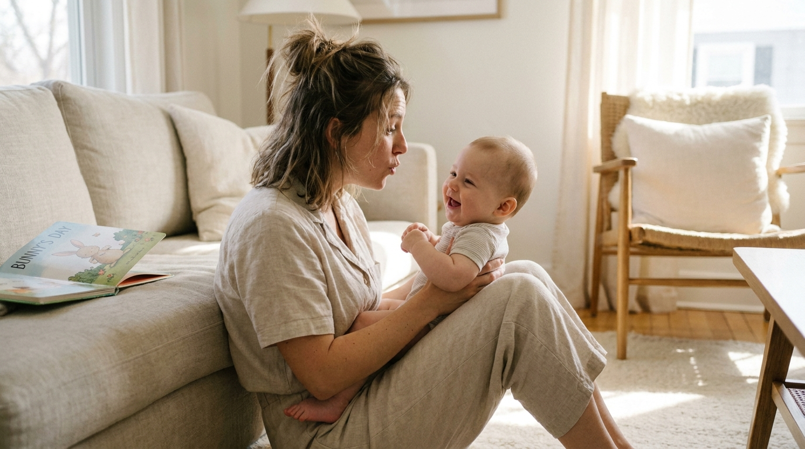

Starting Young: Why Talking to Your Baby Matters So Much
By Leslie Dykstra · Certified Early Childhood Specialist · Williamson County, TN

If I could give one piece of advice to every new parent, it would be this: talk to your child. From the very beginning — from the womb, from those first sleepy newborn days — your words are doing quiet, powerful work.
Read them stories. Sing to them. Talk about which apples to pick out at the grocery store. Narrate the walk to the mailbox. These small, ordinary things make a huge impact, long before your child can say a single word back to you.
What is "serve and return"?
Serve and return is the technical term for learning how to converse — and it's exactly what it sounds like. Your child "serves" something to you: a coo, a giggle, a point, a word, a big question. You "return" it with your attention and a response. Back and forth, back and forth. That simple volley, repeated all day long, is how children learn to talk, to think, and to feel understood.
The wonderful news is that you already know how to do this. It comes naturally. All I want to do is help you notice it, and lean into it a little more on purpose.
Serve and return at every age
What the back-and-forth looks like changes as your child grows. Here's a simple age-by-age guide.
Infants. When you make silly noises and soft sounds, watch how your baby responds — a wiggle, a coo, a bright laugh. That laugh is the return! Keep the volley going. Pause, wait, and let them "answer" in their own way.
Toddlers. Point to a picture and ask, "Where is your favorite color on this page? What is it called?" They're learning to find, to name, and to hand an answer back to you.
Twos. Ask real questions and give them room to reply. "What do you feel like for snack today?" They'll answer — and just like that, they're holding up their end of a conversation.
Ages 3 to 5. Now you can practice serving and returning several times back and forth. Ask open-ended questions — the kind that can't be answered with just "yes" or "no." "What do you think will happen next?" "Why do you think the puppy is hiding?" This is where critical thinking wakes up, and where your child gains the confidence to share their ideas and feel empowered.
Why does this matter so much?
The children who arrive at kindergarten with strong language almost always come from homes full of talk. Not fancy talk — just steady talk. Rich conversation grows vocabulary, and vocabulary is the ground floor for reading, for math word problems, for making friends, for everything that comes next. These are the very skills we look at on a Kindergarten Readiness Checklist.
And here's the part I love most: it doesn't cost anything. You don't need flashcards or an app. You just need your voice and a willingness to pause and listen for the return.
Easy ways to grow the back-and-forth today
- Narrate your day. "I'm washing the red cup now. It's so warm and soapy!" Ordinary words are still new words to a little one.
- Ask and wait. After you ask a question, count to five in your head. Children need a beat to gather their answer.
- Follow their lead. If they point at a dog, that's your topic. Talk all about that dog.
- Read every day. Books are conversation with training wheels — here's how to read aloud in a way that builds readers.
Frequently asked questions
Is it really worth talking to a baby who can't talk back yet?
Yes — completely. Long before your baby says a word, they are soaking up rhythm, tone, and vocabulary. When you talk and pause, and they coo or laugh in reply, that back-and-forth is already building the wiring for language. You are teaching, even when it feels one-sided.
What is "serve and return" in simple terms?
It's the back-and-forth of conversation. Your child serves — a coo, a point, a word, a question — and you return it with your attention and a response. That simple volley, repeated all day long, is how children learn to talk and think.
How much should I be talking to my child each day?
More than you'd think, and it counts even during ordinary tasks. Narrate the grocery run, describe what you're cooking, ask what they see out the window. There's no magic number — the goal is to make talking a steady, natural part of your day together.
Want to see your child thrive?
If you'd like to talk about where your child is and what would help them most, book a free 15-minute consultation with Leslie. Little Minds, Big Futures — where every child's potential takes flight.